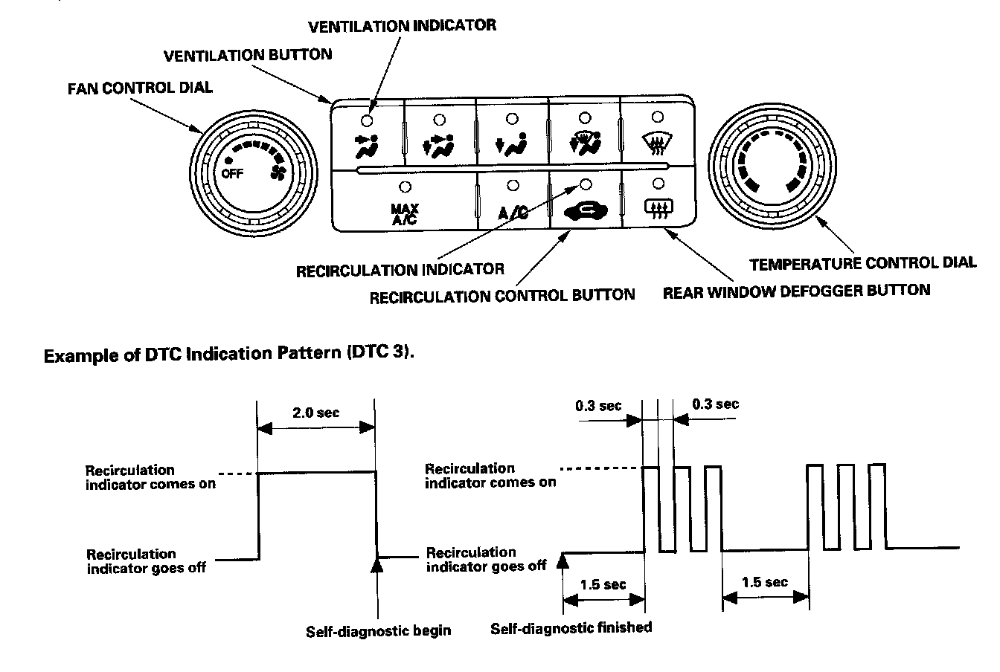
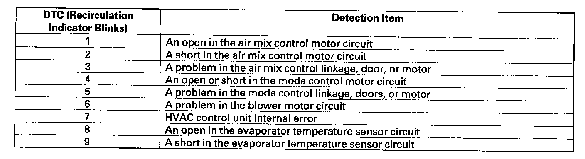

Heating/Air Conditioning
General Troubleshooting InformationHow to Use the Self-diagnostic Function
The HVAC control unit has a self-diagnostic function for heating, ventilation, and air conditioning system. To run the self-diagnostic function, do the following:
1. Turn the ignition switch OFF.
2. Press and hold the recirculation control and rear window defogger buttons, turn the ignition switch ON (II).


3. Recirculation indicator turns on for 2 seconds, then self-diagnostic function begins.
NOTE:
- The blower motor will run at any speed regardless of the dial positioning.
- In the case of multiple problems, the recirculation indicator will blink the lowest number DTC only.
- If no DTCs are found, the indicator will not blink.
Clear the DTCs
When the problem is repaired, DTCs will automatically clear.
Max Cool Position Function
When the mode control button is in the MAX A/C position, the HVAC control unit will automatically select the recirculation mode and turn the A/C on. If the recirculation switch is pressed when in MAX A/C, MAX A/C turns off. If A/C is pressed when in MAX A/C, the A/C turns off.